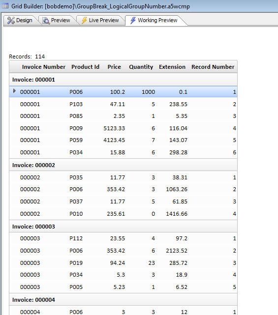

Grid Component - Group Breaks
When a Grid is rendered it can be useful to break the Grid up into logical sections by inserting Group Breaks with group headers and/or footers into the Grid. These videos show how this can be done for both tabular and snaking columnar Grids.Watch Video - Part 1
Watch Video - Part 2
Watch Video - Part 3
Summary Values
You can include summary values in Group Headers and Footers.(Contrary to what the video says, this feature is supported on both SQL and .dbf tables).
Watch Video
Logical Record Number Within Group
When you build a Grid there are two system fields, <RowNumber> and <LogicalRecNo>, that you can place on the Grid. The <LogicalRecNo> starts at 1 and increments by 1 for each row on the Grid. However, when you have Group Breaks turned on, you might like to display a value that starts at 1 after each Group Break. This can be easily done using a 'Custom' control type. Here is how to do it.
1. Add a new dummy field to your Grid.
2. Set the control type to 'Custom'
3. Define the following Xbasic for the Custom control in 'Custom Control Properties':
(This example assumes that the name of the dummy field is 'grouplogicalrecno' - Your own dummy field will likely have a different name.)
if eval_valid("args.rtc.group1LogicalRowNumber") then Grouplogicalrecno_render = "" + args.rtc.group1LogicalRowNumber else Grouplogicalrecno_render = "?" end if
4. Add the dummy field to the Grid and set the cell inline-style to: text-align: right;
Here is how the Grid will render:
Notice the 'Record Number' column at the right starts at 1 every time a new Group is started.
